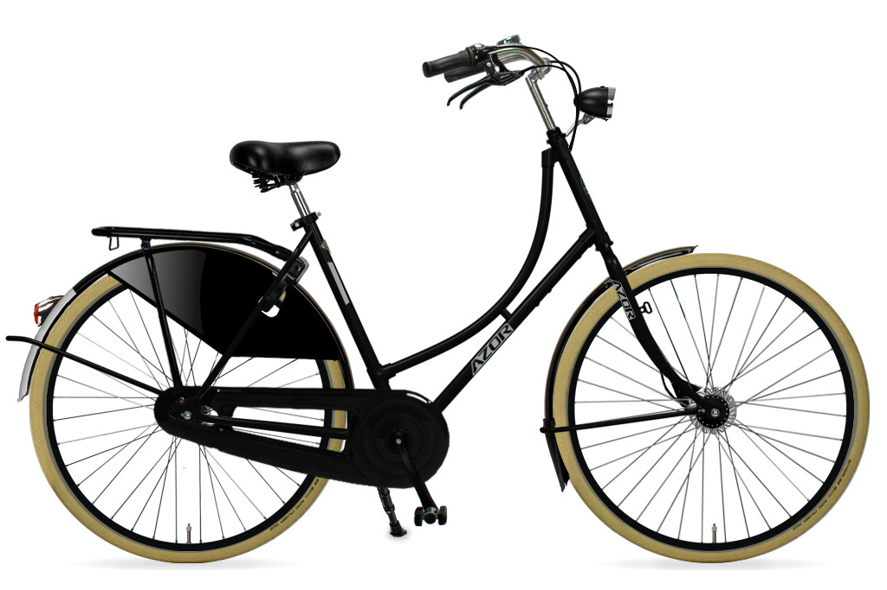

The Importance of Human-Scaled Cities
Welcome to our page discussing the significance of creating cities that are human-scaled,
non-car-centric, bicycle-friendly, mixed-use, and compact.
In today's urban planning, it's crucial to focus on designs that enhance the quality of life for residents and promote
sustainable development. Here's why these principles are vital:
- Human-Scaled: Emphasizes a pedestrian-friendly environment, fostering
community engagement and a sense of belonging.
- Non-Car-Centric: Reduces traffic congestion, air pollution, and
promotes alternative, eco-friendly transportation methods.
- Bicycle-Friendly: Encourages a healthy lifestyle, reduces carbon
emissions, and enhances accessibility for cyclists.
- Mixed-Use: Creates vibrant, diverse neighborhoods where people can live,
work, and socialize in close proximity.
- Compact: Maximizes land use efficiency, minimizes urban sprawl, and
supports sustainable infrastructure development.
<>
By incorporating these principles into urban planning, we can build cities that are not only sustainable and efficient but also
prioritize the well-being of their residents.